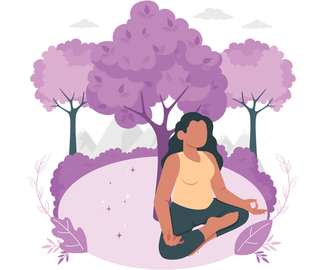
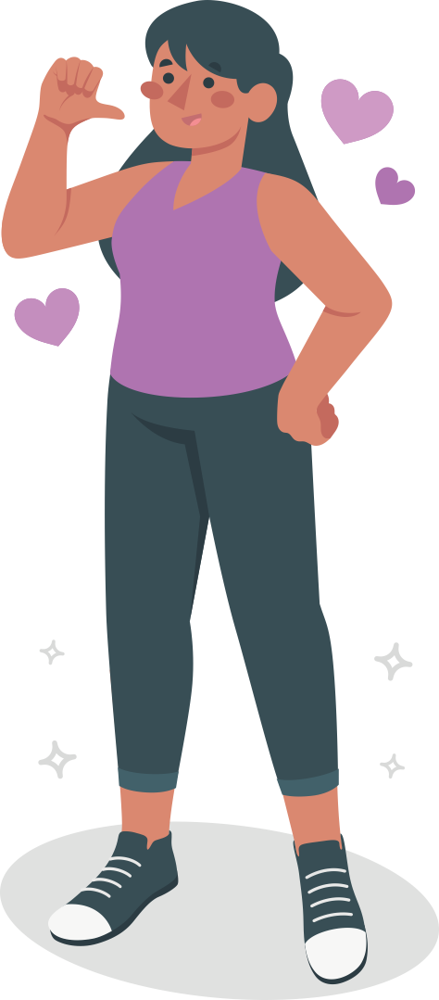
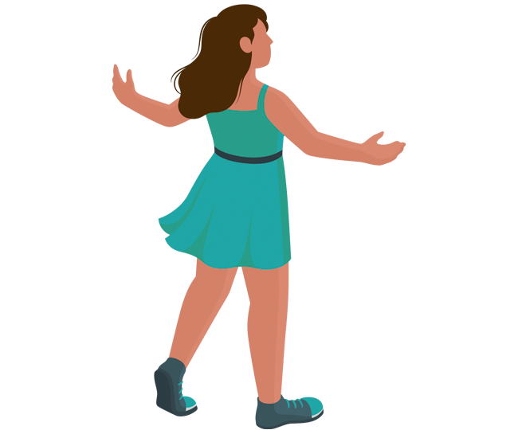
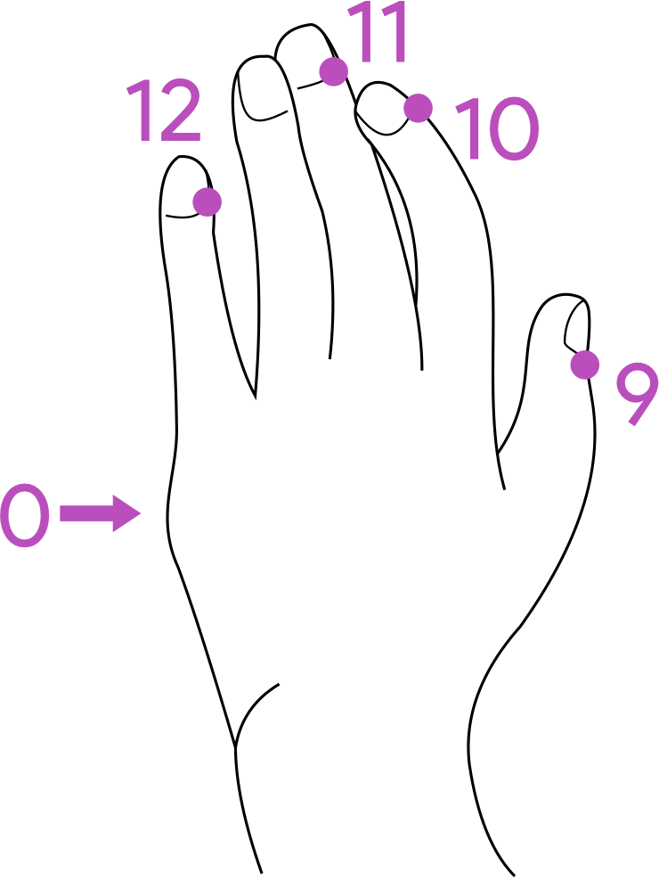

Técnicas para afrontar los pensamientos catastróficos, fatalistas y discortantes.

Las herramientas diarias nos permiten crear espacios, ser conscientes de nuestras elecciones y generar cambios positivos en vida y bienestar.
Estas son algunas técnicas que te compartimos:
1 "DISIPAR BARRERAS MENTALES"
® Access Consciousness
Para este ejercicio nos centraremos en las barreras personales, que están relacionadas con las actitudes, estado de ánimo, percepciones que son pensamientos que nos limitan.
● Realizar respiraciones profundas.
● En voz alta decir, cuerpo baja y disipa tus barreras (tres veces).
● En voz alta decir, cuerpo expándete (tres veces).
● Soltar los pensamientos que están limitando y si regresan a la mente en algún momento, repetir mentalmente: bajo barreras, bajo barreras, bajo barreras.
Ser consiente que cuando empiezas a resistir algo
o a alguien, te encuentras emitiendo juicio sobre
esa persona. ¡baja barreras! .
︵‿︵‿︵‿︵
2 "FRASES PARA CAMBIAR EL PENSAMIENTO EN EL MOMENTO"
® Access Consciousness

Tener a la mano frases y preguntas sin respuesta que abran las posibilidades, es una herramienta
que ayuda a disipar los pensamientos que nos están robando la tranquilidad y a tener más espacio
para crear y elegir de manera consiente.
Aquí algunos ejemplos:
● “Universo, muéstrame algo hermoso hoy”
● “Si realmente estuviera creando mi vida hoy, ¿qué elegiría inmediatamente?.
● ¿Cómo puede mejorar esto?” cuando algo “bueno” pase y también cuando algo “malo” pase.
● ¿A quién le pertenece esto?” El 98% de nuestros pensamientos, sentimientos y emociones de nuestra cabeza ni siquiera son nuestros.
● Todos los juicios que está trayendo esto los destruyo y los descreo.
● Todas las percepciones que está trayendo esto lo destruyo y descreo.
● Todos los puntos de vista que está trayendo esto los destruyo y descreo
︵‿︵‿︵‿︵
3 "BENDECIR TU VIDA, TU ENTORNO, TU SER"
® Access Consciousness
Según el Diccionario de la Real Academia Española, "bendecir" se define como alabar, engrandecer o ensalzar a alguien; colmar de bienes a alguien o hacer que prospere; e invocar la bendición divina en favor de alguien o algo.
Desde la metafísica el Poder de la Bendición: Cuando tu bendices, estás reconociendo la belleza omnipresente, oculta a los ojos materiales, estas activando a tu favor la gran ley de atracción creando el tirón magnético que te traerá todo lo bueno que anhelas para los demás al bendecirlos. (Cony Méndez)
︵‿︵‿︵‿︵
3.1 "BENDECIR TU VIDA, TU ENTORNO, TU SER"
Tu nombre es importante, es la forma en que nos identificamos, bendecirlo abre puertas, abre
caminos y posibilidades
● Mi nombre en esta vida es: (dices tu nombre) y bendigo, lo envuelvo de luz y lo lleno de fuerza.
● Mi nombre (dices tu nombre) abre puertas, caminos y siempre es exitoso.
● Bendigo mis antepasadas y mi ascendencia en el poder de mi nombre (dices tu nombre)
● Mi nombre (dices tu nombre) es mi mantra, marca y triunfo.
● Mi nombre (dices tu nombre) es gratitud, energía, magia.
︵‿︵‿︵‿︵
3.2 "BENDÍCETE"

El poder que habita en ti porque cada ser es una existe una extensión
de la divinidad, cuando te bendices, se produce una alquimia de luz
y no hay oscuridad que se sostenga.
Bendigo mi existencia,
bendigo mi trabajo,
bendigo mi casa,
bendigo mis finanzas,
bendigo mi camino,
bendigo mi aprendizaje,
bendigo mi salud,
me bendigo de todas las formas posibles.
bendigo mi entorno,
︵‿︵‿︵‿︵
4 "TAPPING"
El tapping o EFT es una tecnica que combina acupuntura y psicología, dando golpecitos en puntos específicos del cuerpo mientras se repiten afirmaciones positivas para aliviar problemas emocionales y físicos.
Te compartimos dos sencillos pasos para ponerlo en práctica:
- Formular el problema con una frase sencilla y comprensible.
Por ejemplo, si no tienes dinero, puedes decir: «no tengo ni un peso». Si te duele la espalda: «me duele la espalda».
- Mientras se pronuncia en voz alta la frase que se ha elegido,
hay que golpear suavemente una serie de puntos del cuerpo
que ahora te indicaré.
● Primero en golpearse el punto 0 (cero) mientras se dice en voz alta la frase “aunque ___________, me acepto totalmente”

● A partir de aquí se utiliza solo la frase del
problema (“me duele el brazo”, “tengo miedo
a las alturas”, etc.). Mientras pronuncias la
frase en voz alta, golpea suavemente.
︵‿︵‿︵‿︵
Fuentes de consulta
● ¿Qué significa bajar barreras en Access?
● 4 prácticas diarias para cambiar tu vida. Access Blog en español,2016 página web.
● Tesoro de los diccionarios históricos de la lengua española Real Academia Española, Bendecir página web.
● El Gran Poder de la Bendición. Conny Mendez, página web: 29 julio 2015 / Autoayuda
Este material es una recopilación del Grupo de estudios sobre la mujer Rosario Castellanos para su programa de Autocuidado para defensora de Derechos Humanos.
Se autoriza la reproducción parcial o total de esta publicación siempre y cuando sean sin fines de lucro y se cite la fuente.